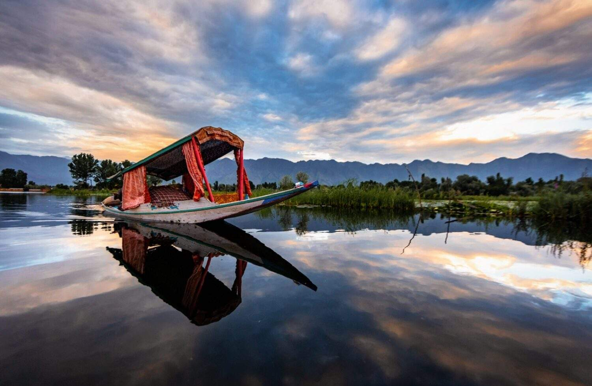
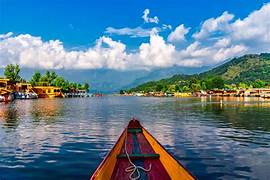
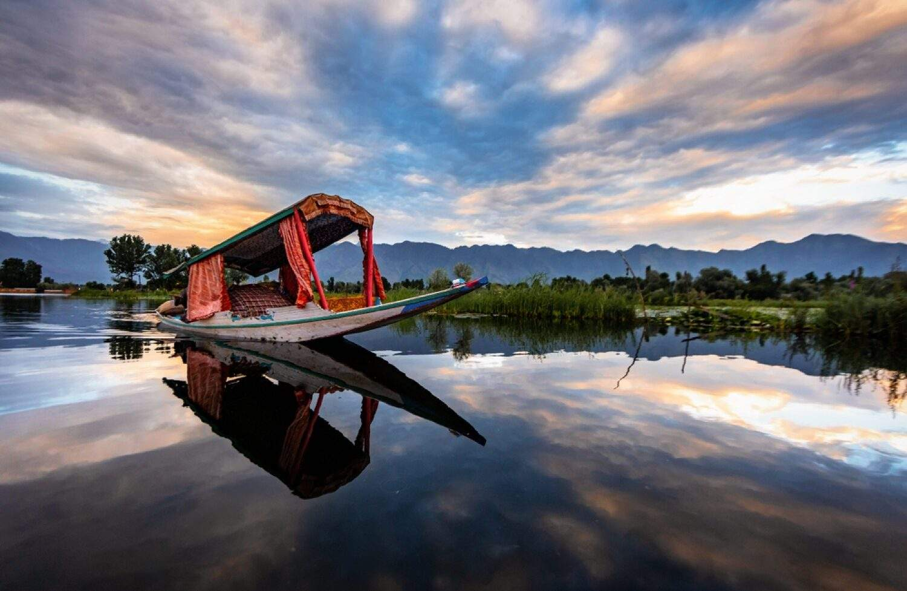
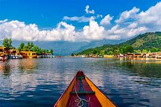

Places to Visit
-
Dal Lake
 



Dal Lake is a significant tourist attraction located in Srinagar, the summer capital of Jammu and Kashmir, India. It is one of the most beautiful and picturesque lakes in the region, known for its scenic beauty, floating gardens, and houseboats.
- Location: Dal Lake is situated in the heart of Srinagar city, surrounded by majestic mountains and lush greenery. It covers an area of approximately 18 square kilometers.
- Natural Features: The lake is renowned for its crystal-clear waters, which reflect the surrounding snow-capped peaks of the Himalayas, creating a mesmerizing panorama.
- Floating Gardens: Dal Lake is famous for its unique floating gardens, known as "Rad" in the local language. These gardens are made by bundling up vegetation and soil into large floating mats, which are anchored to the lake bed.
- Houseboats: One of the most iconic features of Dal Lake is its houseboats, locally known as "Shikaras." These traditional wooden houseboats offer a unique and luxurious accommodation experience to visitors.
- Shikara Rides: Visitors can enjoy Shikara rides on Dal Lake, which offer a leisurely and scenic tour of the lake.
- Local Culture: Dal Lake is not just a natural wonder but also a vibrant hub of Kashmiri culture and traditions. Visitors can interact with local residents, shop for traditional handicrafts and artifacts, and savor authentic Kashmiri cuisine at the numerous lakeside cafes and restaurants.
- Recreational Activities: In addition to Shikara rides, Dal Lake offers various recreational activities such as kayaking, canoeing, and water skiing, providing opportunities for adventure enthusiasts to indulge in water sports.
Overall, Dal Lake is a must-visit destination for travelers seeking tranquility, natural beauty, and a glimpse into the rich cultural heritage of Kashmir.